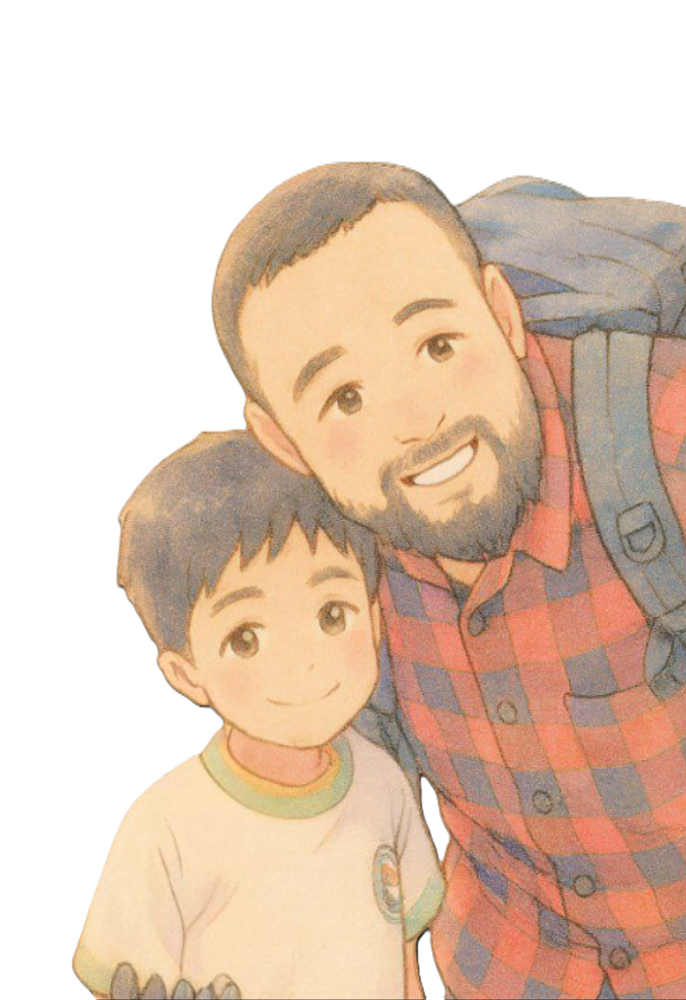

Devolvemos las Súper Capacidades
Paco el Morlaco – Proyecto colaborativo que devuelve esperanza, movilidad y dignidad a quienes la perdieron.
Creemos que una prótesis no es solo un dispositivo médico. Es libertad. Es la capacidad de abrazar nuevamente, de trabajar, de soñar sin límites. Es la oportunidad de volver a ser tú mismo.
